The Big Blog Post of Destiny
August 26, 2026
TLDR / Quick Summary!
- The game is NOT dead!
- I had a kid, which reduces my overall free time, but I am constantly brainstorming new ways to organize my day to squeeze in more development time.
- I joined a local game dev group which has been fantastic. This has allowed me to do a lot of playtesting in person, which has helped inform the direction of the game's development.
- New-player onboarding (e.g. ingame tutorials and mechanics explanation) is really important, not even so much for expanding reach, but just for actually helping players understand how all the game's systems come together.
- The game has too much content in terms of items, classes, skills, and not enough content in terms of combat encounters and areas to explore. So I'm reassessing my standards and goals.
- I'm thinking a lot about ways to stay engaged with the online aspect of the community (e.g. social media, the Discord server) and I'm brainstorming ways to allow playtesting opportunities for interested players that can't necessarily attend the local in-person meetups.
Various Fun Screenshots
Steamworks integration! (Create lobbies, join them through your friends list, etc.)
Screenshot of the Steamworks-compatible lobby system. It has little "scoreboard rows" for all the connected players and shows data about their ping, level, and inventories.
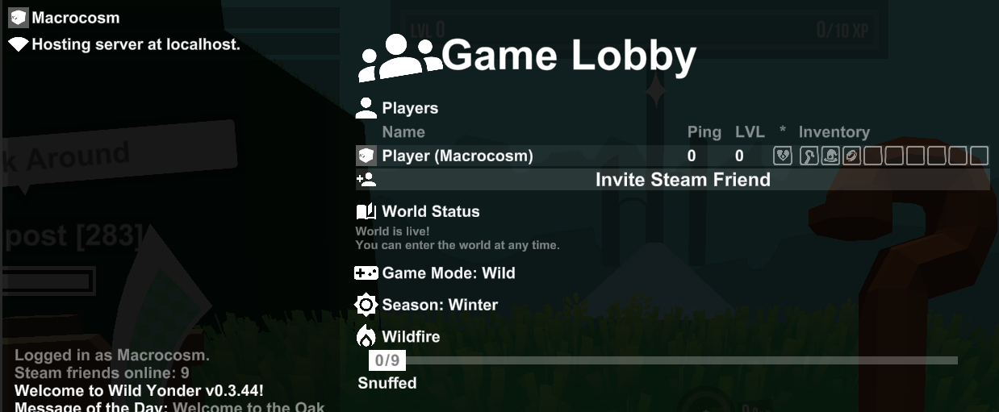
Newly polished and expanded character creation screen with an actual 3D character preview.
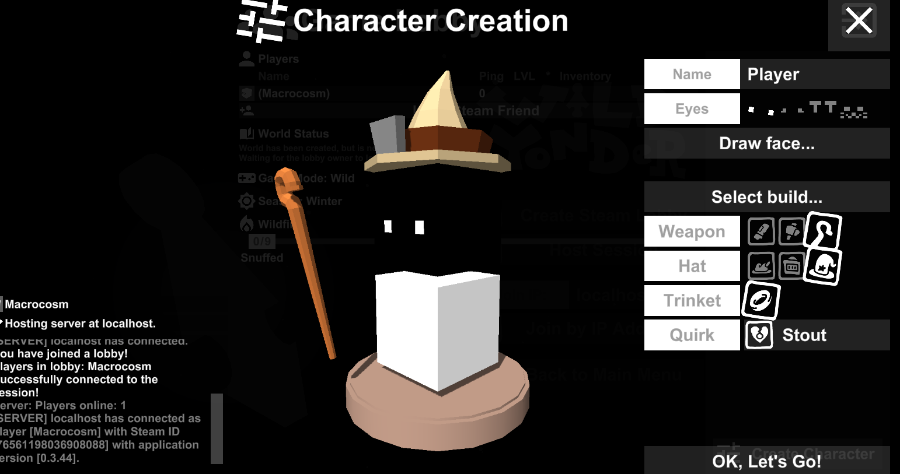
During character creation, you can actually draw a little pixelated bitmap for your character's face. This is sort of friendslop-coded, and I liked it.
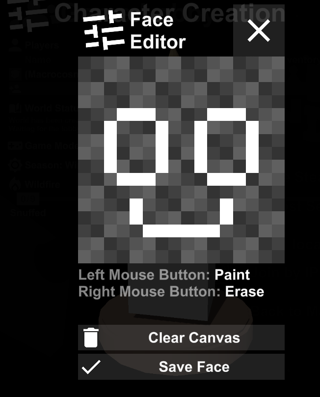
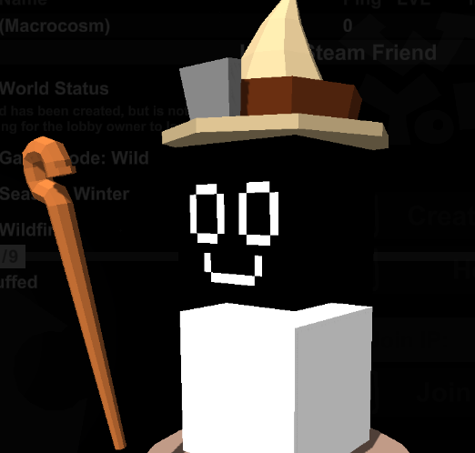
A tutorial area for introducing the core mechanics of the game to the player. This has done wonders but it still needs a lot more work because there's a lot about the game that needs to be explained.
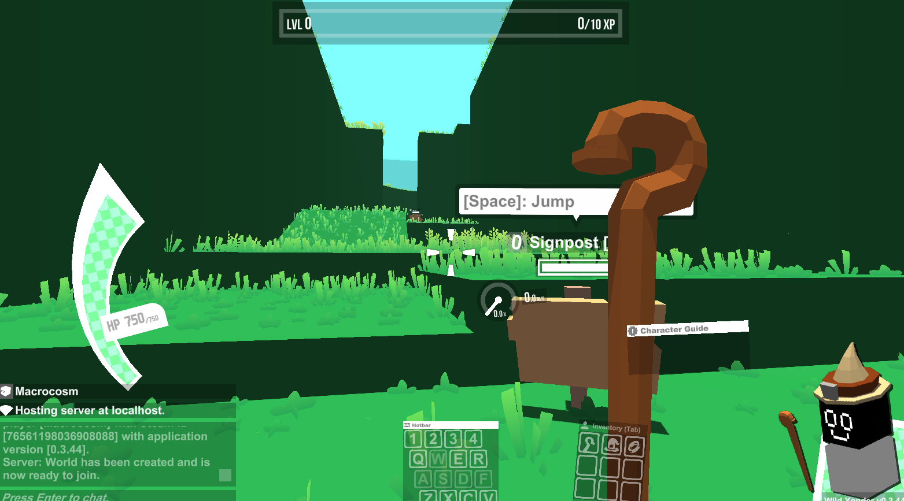
Just screenshot of a somewhat-relevant item tooltip because it's hard to have a screenshot that actually shows this, because it's somewhat abstract. But the entire part of the game system that calculates bonus weapon damage based on your character's movement velocity has been completely reworked to be like, a lot more systemic and complicated, for better or for worse. Actually this involved completely reconceptualizing how attacks are even represented in the game. I could go into it but basically, the faster you're going, you'll deal exponentially more damage, which heavily incentivizes crazy movement. It also creates some fun ways to play around with "mass"/weight in the game because that also factors into the damage calculation formula. Basically you could go for "fat" builds where your character builds a super heavy inventory filled with plate armor and anvils, and that ends up factoring into the amount of weapon damage you do on a velocity strike since you can basically put that weight behind your attacks.
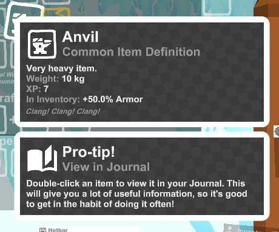
More options for fleshing out the base 3 character abilities with various star modifiers.
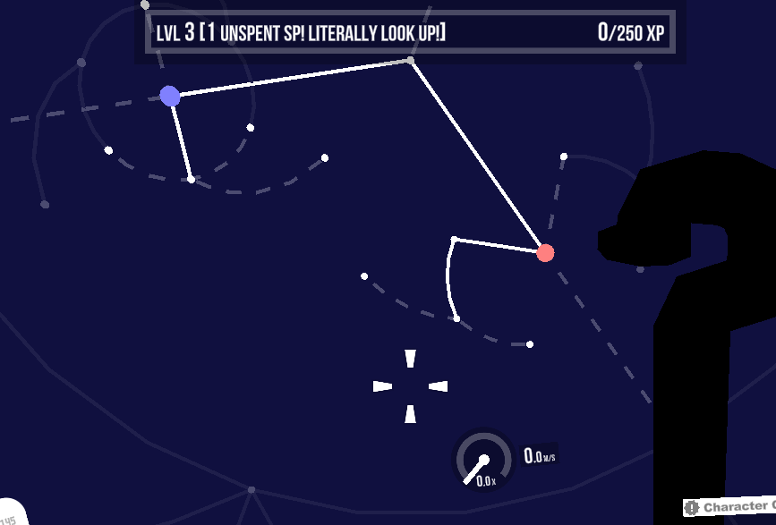
Hockey!
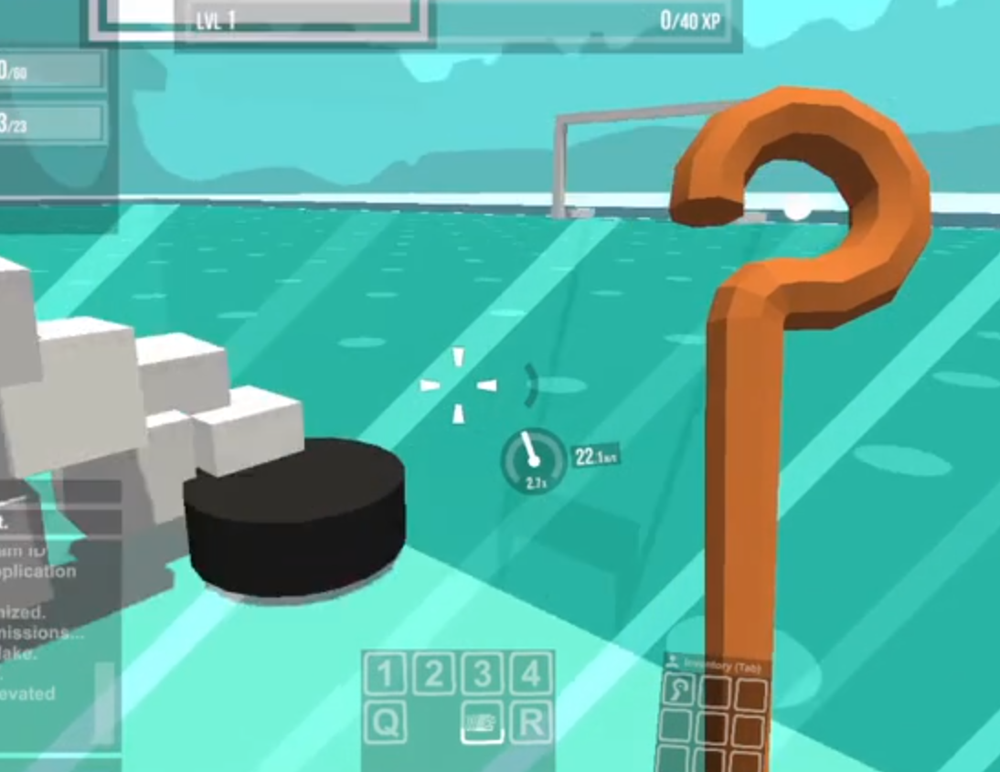
Various improvements to the HUD including a new, stylish HP bar and a more polished NPC dialog interface.
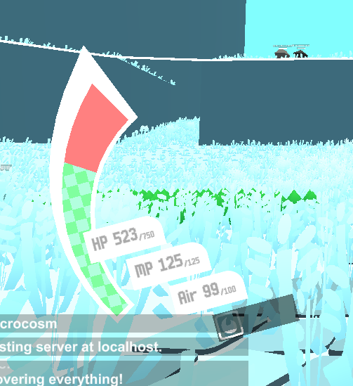
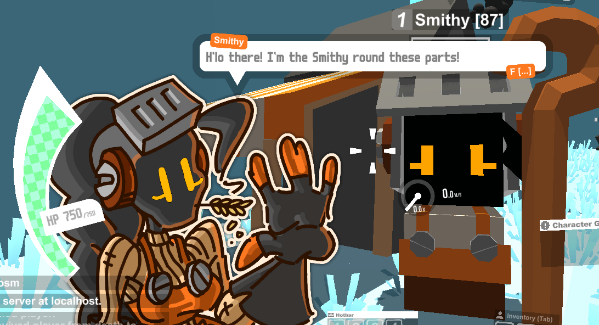
Water!
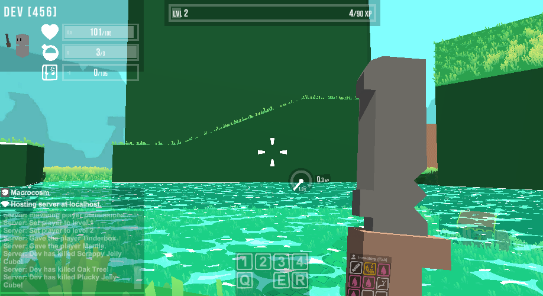
The Long Part of the Post
The TLDR and the Screenshots are probably the quick and fun part of this post. Don't feel pressured to necessarily read this next part unless you're really interested in the nitty gritty thought process behind development! Anyway...
The game is NOT dead!
...Though, if my posting activity on this server (or for that matter, any social media platforms) over the course of the past year were any indication, I would certainly forgive anyone for thinking so.
Due to major events in my personal life in the past year (translation: I had a kid!), admittedly, I haven't had as much time recently to work on the game as I did in the past. I suppose this is par for the course, and it makes me really wish I'd hustled more in my early twenties instead of playing a zillion hours of Dota 2 and Team Fortress 2. But then again, if I hadn't played those games, I probably wouldn't be making Wild Yonder, so, what's a fellow to do?
Though, even despite this, believe it or not, the game has actually been getting semi-regular development updates and playtesting -- it's just that, the game's presence has transitioned more into the actual real world, much more so than the internet.
In 2025 I discovered (and joined) a fantastic group of small, local independent game developers, the Triangle Interactive Arts Collective. This group does all sorts of awesome things -- weekly hangouts, monthly playtest nights that are open to the public, and even a big yearly showcase (Oak City Indie Games) that fills out a showroom floor at the local community college.
Plugging into this group has been an absolute game changer in terms of the playtesting resources I have at my disposal. Finding playtesters over the internet can be challenging, and even if you are able to find incredible, wonderful people that are interested in your game and willing to playtest it (you guys are great) -- there's still something that can be lost in translation when you can't actually watch them playtest in person. The closest approximation would be like a Discord screen share, but that isn't always possible, and even if you can get it, there's still something lost when you can't watch someone's facial expressions and body language. Oh, and tech troubleshooting is more difficult remotely. Basically, when it comes to playtesting, in-person is really the best.
Discoveries From Playtesting
Now that I have a fairly regular stream of playtesters experiencing the game fresh, I was finally able to watch a large number of players interact with the game, going into it with very little idea of what to expect other than maybe a promotional poster and brief elevator pitch from myself. And I discovered that... for the most part, people don't really know what to do.
In retrospect, this should not be surprising at all. I made the daring (some might say ill-advised) decision to make a game that basically demands high-level skills from the player that span multiple somewhat-inaccessible gaming genres. Players are expected to have the finesse and aiming control characteristic of first-person shooters, the precise movement of platformers, the build-crafting and item-drafting of MOBAs like Dota.
This is all well and good -- I think it's fine to design a demanding game that expects a lot from the player, as long as you're delivering commensurate fun in return. But, if you're going to do so, you can't just drop the player off into the deep end and wonder why they're not swimming. I realized that, in older builds of the game, that's sort of what I was doing.
And maybe my expectations were somewhat mis-calibrated by some of the absolute amazing intuition, innate game sense, and enthusiasm of some of the playtesters on the Discord server from the game's first internet playtest. Some of you guys made it to the final boss, discovered game-breaking builds, and were even making impressive speedrun videos of the game.
But, I realized for the typical player, this was not necessarily the sort of experience they were having. In practice, the average player was making resonating with one or two aspects of the game -- they really enjoyed the movement mehcanics, or the art style, or maybe they could see the potential for the crafting system -- but as a whole, they couldn't see how all the various systems in the game were supposed to pull together.
Focusing on New Player Experience and Onboarding
I think what I discovered is that, if I'm going to ask for players to accept such a burden of developing an understanding of how so many complex mechanics fit together, I sort of have to meet them in the middle by providing a decent onboarding/tutorial experience. And honestly I'm still in the process of properly fleshing that out. I've developed an entire starting zone that is sort of the tutorial for the game, but I'm realizing that it's still not nearly extensive enough to help the average player "get it".
What's probably needed is a serious overhaul to how the game world itself is designed, such that the entire game (or maybe at least the few 1-2 hours) is sort of a tutorial for itself.
This is all so painfully obvious that anyone who's watched an episode of "Game Maker's Toolkit" would probably laugh at my expense. But when you're actually in the trenches developing the game, it's very easy to lose sight of the overall "war effort". I've realized that for a very long time I was pursuing a "novelty-centric" development philosophy rather than a "player-centric" one. I spent time making things that I thought would be interesting to make. And -- there's not necessarily anything wrong with that! If that's what I (or any other developers) enjoy about making games, then more power to them (me). But, if you actually want players to enjoy and maybe even buy your game, then... that approach isn't necessarily going to work forever.
I think I've spent enough years having my fun and just developing things that pop into my head because I thought they would be interesting. I basically made every novel mechanic I could imagine, and I've realized, I have a ton of cool ideas here, and many of them actually fit well together -- but a lot of ideas don't actually fit into that vision, and in a sense, the development time to make them was somewhat wasted. I'm at a point now where I actually want to finish this thing and let players (hopefully) enjoy it. I don't know how long that's going to take, but if it's ever going to happen, I have to start taking responsibility for the player experience instead of this just being a collection of technical novelties that I felt like would be fun to program.
Paring Down On Content for a 1.0 Release
In light of all of this, I've realized that some of my long-held goalposts for the amount of content I've historically wanted to include in the game are borderline psychotic.
I've always imagined a game that absolutely amazes the player with the staggering amount of content in the game, enough to easily take up dozens or even hundreds of hours of playtime, with hundreds (or maybe even thousands) of unique player upgrades, skills, craftable items, unique enemy types, run difficulty modifiers, etc. This sort of standard for an overwhelming quantity of content is more so inspired by MMOs than modern roguelikes, which frankly, is a very unrealistic standard for a solo developer to strive for (even though it's something I'd really want). After all, MMOs like WoW were made by large teams of professional developers working on the game full-time. I am one guy doing this as a hobby.
Beyond being unrealistic, it's not even expected by players of the roguelike genre.
For example, Balatro (a completed game) has something like 150 Jokers. Slay the Spire 1 (a completed game) has something like 370 cards in it. Both are wildly successful mainstays of the roguelike genre.
Wild Yonder already has 280 Items and 92 Stars (player level-up upgrades) in it. Historically, according to me, by launch, these numbers should be several times larger than what they are currently are. Does anyone really care if this game has thousands of these upgrades in the game compared to only hundreds? Probably not, and even if they did, it's a moot point if it's not possible for the developer to do so while also devoting the needed time to the other time-intensive things the game needs, like 3D level design, modeling assets, etc.
So I think if I ever actually intend to release a 1.0 of this game, I need to focus on tightening up the content and focusing on a smaller subset of high-quality, well-designed, well-balanced mechanics, instead of just an endless all-you-can-eat buffet of every random mechanic I've ever thought of. This is very painful for idealistic developers such as myself because it involves making decisions about what to cut in your game, and what things don't actually belong in your game as a whole, even if they are very cool as an isolated concept.
For example, it kills me to say it, but... creating an entire system so that you can issue Pikmin-style RTS battle commands to mobs of controlled and/or summoned units was probably not the right call. I'm not sure even a single playtester has EVER taken the "Raise Skeleton" ability, and even if they did, it just barely even makes sense with the alleged movement-focused concept of the game to have an ability which boils down to, standing still from a safe distance and having a bunch of controlled units do your dirty work for you.
In summary, the basic takeaway is that, it's probably insane to spend thousands of hours of development time creating enormous swaths of obtuse, difficult-to-obtain endgame items and abilities that 99% of players will never see.
Of course, at the end of the day, coming up with a zillion different items is one of the most fun parts of game development for me. So I still reserve the right to, if the game releases and does well enough for me to keep working on it full-time, spend years making free content updates and indiscriminatley adding all the items I could ever imagine.
But to actually get a 1.0 release out, I probably need to start showing some (God forbid) discipline and restraint. Which pains me to say, but I don't think I'll ever finish if I keep taking the path I've been taking.
Staying Engaged with the Online Community
As great as it's been for me to have a local, in-person game dev group that has provided a community for me to develop and get feedback for Wild Yonder, it's still not fun or fair to do so at the expense of completely disregarding the game's online following (albeit very small).
The Discord server has some folks that have been quietly and graciously remaining in the server's member list for far longer than I deserve based on how little information I've been giving out recently. So, I apologize for that.
I've been trying to brainstorm some ways to stay active online without necessarily burning out on internet engagement or spending too much of my limited development time on meta-tasks like community management. (Not that community management isn't important, but development has to take priority if the game is ever going to actually exist to justify the existence of its community.) This could take the form of modest goals like, posting with a few dev screenshots something like once a month. Not a lot, but still enough to prevent the server from being a complete graveyard.
I also want to provide opportunities for non-local, online players to playtest the game without having to necessarily attend the in-person meetups. After all, the vast majority of people in this world don't live in my city and I don't want to limit the game's reach to just people that live within 30 minutes of me.
As I discussed, these "remote playtests" are unfortunately probably not as useful to me as the in-person versions for the purposes of guiding development, but... There are other good reasons to let people play your game other than just to watch them. If you guys have a good experience with the game, and because of that, you stick around as part of the community, maybe wishlist the game (once the Steam page eventually gets up), and maybe even reel in a friend or two, that's a huge win for the game, even if it didn't necessarily directly give me "actionable insights" into what needs to be changed.